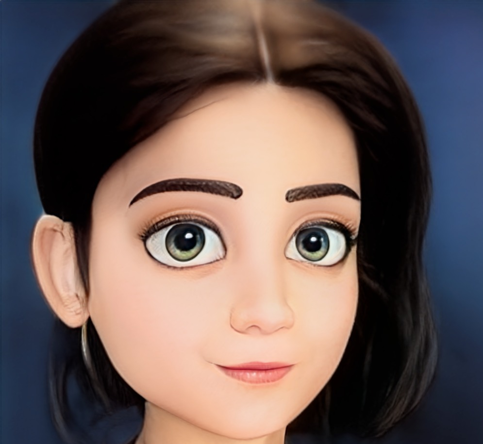

"Please click on the images for sound"

I am Sri Vaishnavi, pursuing master’s in computer science at Bridgewater State University. I have 2+ years of work experience at Global Logic, a Hitachi based company as an Information Management Analyst. I have good academic standing coupled with my passion to help my peers inspired me to take part in organizations like TASK and a non-profit named End Now. I worked as Cyber Rakshak (Digital well-being activist) with the intention to provide digital advocacy, awareness about cyber frauds, social engineering, and cyber-crimes. These foundations gave me plenty of opportunities to present myself and improve my organization and presentation skills.